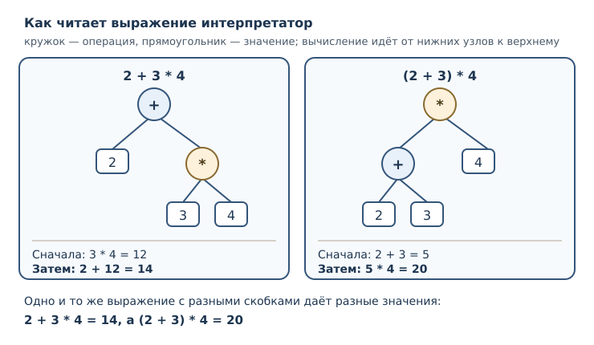
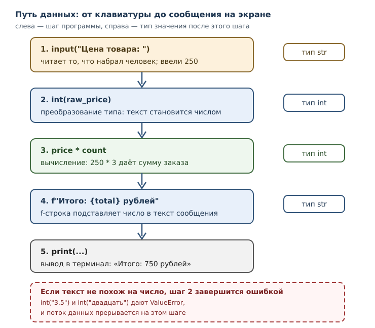

Выражения, операторы и ввод данных
Приоритет операций, сравнения, логические связки, ввод с клавиатуры и форматирование строк.
В этой главе
До сих пор программа знала всё заранее: числа были записаны прямо в тексте, и результат зависел только от них. Настоящая программа ведёт себя иначе — она получает входные значения от человека, проверяет условия и подставляет ответы в текст сообщения. Чтобы это стало возможным, нужны три вещи: умение строить сложные выражения и понимать, в каком порядке они вычисляются; умение сравнивать значения и получать ответ «да» или «нет»; умение читать ввод с клавиатуры и превращать введённый текст в число. Всё это — содержание текущей главы.
Вы уже познакомились со значениями, именами и объектами. Теперь значения начнут соединяться в выражения, а выражения — в вычисления, которые описывают реальную задачу: стоимость заказа, проверку возраста, подсчёт итога.
4.1 Что вы сможете после этой главы
- читать сложное выражение и определять порядок его вычисления;
- применять скобки осознанно, а не наугад;
- получать значения
TrueиFalseпри помощи сравнений; - соединять условия логическими операторами и понимать, почему
andиногда не вычисляет второй операнд; - читать ввод с клавиатуры и преобразовывать его к нужному типу;
- собирать сообщения при помощи f-строк и управлять форматом чисел.
4.2 Порядок вычисления выражения
Выражение вычисляется не слева направо, как читается текст, а по правилам старшинства операций. Это старшинство называется приоритет операторов: оно задано языком и одинаково для всех программ на Python — его определяет не конкретная реализация, а спецификация языка.
print(2 + 3 * 4)
print((2 + 3) * 4)
14
20
В первом случае умножение выполняется раньше сложения, поэтому 3 * 4
превращается в 12, и только потом считается 2 + 12. Во втором случае
скобки меняют порядок: сначала вычисляется 2 + 3, затем результат умножается.
Скобки — единственный способ переопределить приоритет, и это законный
инженерный приём: читаемость важнее краткости.
Таблица старшинства для операторов, которые вы уже знаете (от самого высокого приоритета к самому низкому):
| Приоритет | Операторы | Что делают |
|---|---|---|
| 1 (высший) | ** |
возведение в степень |
| 2 | унарные +, - |
знак числа |
| 3 | *, /, //, % |
умножение, деление, остаток |
| 4 | +, - |
сложение, вычитание |
| 5 | ==, !=, <, <=, >, >= |
сравнения |
| 6 | not |
логическое отрицание |
| 7 | and |
логическое «и» |
| 8 (низший) | or |
логическое «или» |
Две тонкости, которые часто удивляют новичков. Первая: возведение в степень
связывает операнды справа налево, поэтому 2 ** 3 ** 2 означает
2 ** (3 ** 2), а не (2 ** 3) ** 2.
print(2 ** 3 ** 2)
print((2 ** 3) ** 2)
512
64
Вторая тонкость: унарный минус слабее возведения в степень. Запись -3 ** 2
читается как -(3 ** 2), то есть даёт -9, а не 9.
print(-3 ** 2)
print((-3) ** 2)
-9
9
Когда выражение становится длинным, его удобно представлять деревом: каждая операция — узел, её операнды — ветви. Вычисление идёт от листьев к корню, от самых старших операций к самым младшим.

Практический вывод прост: если сомневаетесь в порядке — ставьте скобки. Они ничего не ломают и снимают вопрос при чтении кода.
4.3 Сравнения и значения True и False
Оператор сравнения сопоставляет два значения и даёт результат типа bool:
True или False. Таких операторов шесть.
| Оператор | Смысл | Пример | Результат |
|---|---|---|---|
== |
равно | 3 == 3 |
True |
!= |
не равно | 3 != 4 |
True |
< |
меньше | 3 < 4 |
True |
<= |
меньше или равно | 4 <= 4 |
True |
> |
больше | 5 > 4 |
True |
>= |
больше или равно | 5 >= 6 |
False |
Отдельно стоит равенство (==): этот оператор сравнивает именно значения, а
не идентичность объектов. Два разных объекта с одинаковым содержимым равны.
Не путайте его с is из предыдущей главы: is отвечает на вопрос «это тот же
самый объект?», а == — «эти значения одинаковы?».
print(7 > 3)
print(7 == 7)
print("abc" < "abd")
print("Python" == "python")
True
True
True
False
Строки сравниваются посимвольно, по кодам символов Unicode. Отсюда следует
коварное следствие: "10" < "9" истинно, потому что сравнивается первый
символ ("1" меньше "9"), а не числа десять и девять. Сортировка текста и
сортировка чисел — разные операции.
Результат сравнения можно сразу использовать как значение:
x = 5
print(1 < x < 10)
print(1 < x > 2)
True
True
Запись 1 < x < 10 — это цепочка сравнений, а не два независимых
сравнения, соединённых оператором and. Python читает её как «1 < x и при этом
x < 10», причём x вычисляется один раз. Цепочка удобна для проверки
диапазона и работает только с операторами сравнения: 1 < x and x < 10 —
эквивалентная, но более длинная запись.
Сравнивать значения разных несовместимых типов нельзя: Python не станет угадывать, что имелось в виду.
print(3 < "4")
TypeError: '<' not supported between instances of 'int' and 'str'
Числа разных типов сравнивать можно: 1 == 1.0 истинно, потому что значение
одно и то же. Логические значения тоже участвуют в сравнениях: True == 1
даёт True.
Из сравнений складываются логические выражения — выражения, значением
которых служит True или False. Одно сравнение уже логическое выражение;
несколько сравнений соединяются логическими операторами.
4.4 Логические операторы
Логический оператор соединяет логические выражения. В Python их три:
and («и»), or («или») и not («не»).
| Оператор | Результат истинен, когда… | Пример |
|---|---|---|
and |
истинны оба операнда | 2 < 3 and 3 < 4 |
or |
истинен хотя бы один операнд | 2 > 3 or 3 < 4 |
not |
операнд ложен | not 2 > 3 |
print(2 < 3 and 3 < 4)
print(2 > 3 or 3 < 4)
print(not 2 > 3)
print(True and not False)
True
True
True
True
Здесь есть важное отличие от многих других языков: and и or возвращают не
обязательно True или False, а один из своих операндов. Если первый
операнд уже решает исход, возвращается он сам; иначе возвращается второй.
print(5 and 7)
print(0 and 7)
print(0 or "по умолчанию")
print("" or "запасной")
7
0
по умолчанию
запасной
Почему так? Python трактует значения в логическом контексте: одни значения
считаются «истинными», другие — «ложными»; полное правило разберём в
следующей главе. Пока достаточно наблюдения: 0 и пустая строка ведут себя
как ложь, а ненулевое число и непустая строка — как истина. Отсюда практичный
приём значение or запасное_значение: если первое ложно, получим второе.
Обратите внимание, что print(0 and 7) выводит 0, а не False: оператор
вернул первый операнд, потому что второй ему уже не нужен.
4.5 Сокращённое вычисление
Сокращённое вычисление — свойство and и or не вычислять второй операнд,
если результат уже известен по первому. Для and это происходит, когда первый
операнд ложен: каким бы ни был второй, результат уже известен — он ложен и
равен первому операнду. Для or — когда первый операнд истинен.
Свойство кажется мелочью, но оно определяет поведение реального кода. Проверим
его, поставив в обе части связки вызов print: он печатает текст и ничего не
возвращает, а значит, возвращает None.
print("левая часть") and print("правая часть")
print("---")
print("левая часть") or print("правая часть")
левая часть
---
левая часть
правая часть
В первой связке and увидел слева None, счёл его ложным и не стал вычислять
правую часть — второй строки в выводе нет. Во второй связке or увидел слева
None, счёл его ложным и поэтому вычислил правую часть — обе строки на месте.
Из этого правила следует и практическое следствие, и источник ошибок:
побочные эффекты в правой части and или or могут не выполниться. Если
вызов функции обязателен, не прячьте его в логическую связку.
4.6 Расширенное присваивание
Расширенное присваивание — краткая форма, которая одновременно читает имя
и записывает в него результат операции: x += 1 вместо x = x + 1. Форма
работает со всеми арифметическими операторами: -=, *=, /=, //=, %=,
**=.
x = 10
x += 5
print(x)
x -= 3
print(x)
x *= 2
print(x)
x //= 4
print(x)
x **= 2
print(x)
15
12
24
6
36
Такая запись короче и яснее, когда имя длинное: total_price += item_price
читается лучше, чем total_price = total_price + item_price. Для неизменяемых
значений — чисел и строк — разницы в поведении нет: создаётся новый объект и
связывается с тем же именем.
s = "abc"
s += "!" * 3
print(s)
abc!!!
Два ограничения, о которых стоит знать сразу. Первое: += для строк создаёт
новую строку и не меняет старую, потому что строки неизменяемы. Второе:
расширенное присваивание — это инструкция, а не выражение; у неё нет значения,
поэтому её нельзя вставить внутрь другого выражения.
x = 1
y = (x += 1)
Здесь интерпретатор сообщает синтаксическую ошибку: расширенное присваивание нельзя использовать как значение, поэтому такая запись не разбирается вовсе.
4.7 Ввод данных с клавиатуры
Встроенная функция input читает одну строку из стандартного ввода и возвращает её как текст. Необязательный аргумент задаёт приглашение, которое печатается перед чтением.
name = input("Как вас зовут? ")
print("Привет, " + name)
В интерактивном сеансе это выглядит так (строки, введённые человеком, отмечены в комментарии):
Как вас зовут? Анна
Привет, Анна
Главное свойство input: она всегда возвращает str, даже если человек
набрал число. Ввод 42 даёт строку "42", а не число 42. Это не
случайность, а сознательное решение: до преобразования программа не знает,
что именно хотел ввести человек.
Проверим это без клавиатуры — возьмём строку и посмотрим, что с ней можно делать:
raw = "42"
print(type(raw))
print(raw + raw)
<class 'str'>
4242
Сложение строк дало 4242, а не 84. Чтобы получить число, строку нужно
преобразовать.
4.8 Преобразование типа
Преобразование типа — явное получение значения другого типа встроенными
функциями int, float и str. Программа сама решает, когда и к какому типу
преобразовывать, и это делает намерение видимым.
print(int("42"))
print(float("3.5"))
print(str(3.5))
print(int("101", 2))
42
3.5
3.5
5
Разберём подробно, потому что здесь легко ошибиться.
int("42")разбирает текст как десятичное целое. Пробелы по краям игнорируются, поэтомуint(" 42 ")тоже даёт42.float("3.5")разбирает текст как число с дробной частью. Точка — десятичный разделитель; запятая не подходит, о ней ниже.str(3.5)делает обратное: превращает число в текст. Это нужно, чтобы соединить число со строкой оператором+.int("101", 2)разбирает текст в системе счисления с основанием 2 и даёт5. Второй аргумент пригодится, если вы работаете с двоичными данными.
Преобразование к целому отбрасывает дробную часть по направлению к нулю, но не округляет:
print(int(3.9))
print(int(-3.9))
print(round(2.5), round(3.5))
3
-3
2 4
int(3.9) даёт 3, int(-3.9) даёт -3: дробная часть отбрасывается.
Встроенная функция round ведёт себя иначе — округляет к ближайшему целому, а
при ровно половине выбирает чётное число, поэтому round(2.5) равно 2, а
round(3.5) равно 4. Если нужна «школьная» арифметика, проверяйте результат
на своих данных, а не полагайтесь на интуицию.
Если текст не похож на число, преобразование не выполнится, и программа
сообщит об ошибке времени выполнения с типом ValueError:
print(int("3.5"))
ValueError: invalid literal for int() with base 10: '3.5'
Сообщение буквально говорит: «некорректный литерал для int по основанию 10».
Причина в том, что int не разбирает дробную запись — для неё нужен float.
Вот исправление:
print(int(float("3.5")))
3
Запятая в русской записи числа — тоже источник ошибки: float("3,5")
завершится ValueError, потому что Python ожидает точку. Если значения вводит
человек, запятую обычно заменяют на точку, но этот приём требует работы со
строками, которую мы разберём в главе 15.
4.9 Форматирование строк: f-строки
Собирать сообщение из частей через + неудобно: приходится преобразовывать
каждое число в строку и следить за пробелами. f-строка решает эту задачу:
это строковый литерал с префиксом f, в котором выражения в фигурных скобках
подставляются прямо в текст.
price = 250
count = 3
print(f"Итого: {price * count} рублей")
print(f"Скидка 10 %: {price * count * 0.1:.2f} рубля")
Итого: 750 рублей
Скидка 10 %: 75.00 рубля
Внутри {} может стоять любое выражение: имя, арифметика, вызов функции.
После двоеточия задаётся формат. Запись :.2f означает «число с плавающей
точкой, два знака после точки».
name = "Анна"
score = 7
print(f"{name}: {score:>3} из 10")
print(f"{3.14159:.3f}")
print(f"{score=}")
Анна: 7 из 10
3.142
score=7
Здесь >3 выравнивает число по правому краю в поле шириной три символа,
:.3f оставляет три знака после точки, а сокращение {score=} печатает само
выражение и его значение — удобно при отладке.
Сравните два способа собрать одну и ту же строку:
total = 675
print("Итого: " + str(total) + " рублей")
print(f"Итого: {total} рублей")
Итого: 675 рублей
Итого: 675 рублей
Результат одинаков, но во втором случае не нужно помнить о str и легче
заметить, где именно в строке стоит значение. Конкатенация строк, знакомая вам
по главе 2, требует, чтобы все части уже были строками; f-строка снимает это
требование и почти всегда читается лучше.
4.10 Собираем вместе
Вернёмся к задаче, с которой начиналась глава: посчитать стоимость заказа, введённого пользователем. Программа получает две строки, преобразует их в числа, выполняет вычисления и печатает отчёт.
raw_price = input("Цена товара: ")
raw_count = input("Количество: ")
price = int(raw_price)
count = int(raw_count)
total = price * count
discount = total * 10 // 100
print(f"Товаров: {count}, сумма: {total}, скидка: {discount}, к оплате: {total - discount}")
Проверим ту же логику на конкретных данных, без клавиатуры:
raw_price = "250"
raw_count = "3"
price = int(raw_price)
count = int(raw_count)
total = price * count
discount = total * 10 // 100
print(f"Товаров: {count}, сумма: {total}, скидка: {discount}, к оплате: {total - discount}")
Товаров: 3, сумма: 750, скидка: 75, к оплате: 675
Обратите внимание на порядок действий: сначала ввод, затем преобразование, затем вычисление, в конце форматирование. Каждый шаг виден в тексте программы, и это главное достоинство явных преобразований.

4.11 Типичные ошибки
- Забыть преобразовать ввод.
input()возвращает строку, поэтомуage + 1для введённого"20"дастTypeError, а не21. Сначалаint(...)илиfloat(...). - Сравнивать строки как числа.
"10" < "9"истинно. Если значения пришли текстом, преобразуйте их до сравнения. - Путать
==и=. Одиночное=связывает имя, двойное==сравнивает. В условии это различие решает, работает программа или нет. - Ожидать от
intокругления.int(2.9)даёт2: дробная часть отбрасывается. Для округления естьround, и правило у него своё. - Прятать важный вызов в
and/or. Из-за сокращённого вычисления функция в правой части может не выполниться. - Считать
and/orстрого логическими. Они возвращают операнд, поэтомуprint(0 and 7)выводит0, а неFalse. - Забыть про запятую как десятичный разделитель.
float("3,5")— ошибка; Python ожидает точку. - Писать
notне там, где нужно.not x == yозначаетnot (x == y), потому что сравнение старшеnot.
4.12 Упражнения
1. Порядок действий
Не запуская код, вычислите значения выражений: 8 + 2 * 5, (8 + 2) * 5,
2 ** 2 ** 3, -2 ** 2, 17 % 5 + 17 // 5. Затем проверьте программой и
объясните каждое расхождение, если оно обнаружится.
2. Скобки по делу
Запишите выражение для средней температуры трёх дней: t1, t2, t3.
Проверьте его на значениях 10, 12, 14 и объясните, почему без скобок
результат был бы другим.
3. Прогнозирование сравнений
Что выведет программа? Запишите ответы, затем проверьте.
print(2 != 2)
print(2 <= 2)
print("a" < "b")
print("abc" == "abc ")
4. Цепочка сравнений
Пользователь ввёл число. Напишите выражение, которое истинно, когда число
лежит в диапазоне от 1 до 100 включительно, и используйте цепочку сравнений.
Проверьте на значениях 0, 1, 100, 101.
5. Логические связки
Для значений a = 3, b = 7, c = 10 вычислите: a < b and b < c,
a > b or b < c, not a == 3. Объясните результат каждого выражения.
6. Сокращённое вычисление
Объясните, почему выражение print("" or "нет данных") выводит нет данных,
а print("есть" or "нет данных") — есть. Как это связано с сокращённым
вычислением?
7. Исправление ошибки преобразования
Код падает:
age = input("Возраст: ")
print(age + 1)
Определите тип ошибки, объясните причину и исправьте код так, чтобы программа
работала для ввода 20. Что произойдёт, если человек введёт двадцать?
8. Расширенное присваивание
Перепишите последовательность инструкций, используя расширенное присваивание:
score = 100
score = score + 10
score = score * 2
score = score - 20
Вычислите итог вручную, затем проверьте программой.
9. Формат отчёта
Напишите программу, которая для name = "Анна", score = 7, total = 10
выводит ровно одну строку:
Анна: 7 из 10 (70.0 %)
Используйте f-строку и формат с одним знаком после точки для процента.
10. Мини-задача: чек
Программа получает три значения: цену товара, количество и процент скидки —
как строки. Преобразуйте их, вычислите сумму без скидки, размер скидки в целых
рублях и итог, затем выведите одну строку отчёта вида
Товаров: 3, сумма: 750, скидка: 75, к оплате: 675. Проверьте на цене 250,
количестве 3 и скидке 10.
4.13 Проверка понимания
- Почему
2 + 3 * 4равно14, а не20? Как изменить порядок? - В каком порядке вычисляется
2 ** 3 ** 2и почему? - Чем
==отличается отis? Какой оператор отвечает за равенство значений? - Что такое логическое выражение и какого типа его результат?
- Почему
andиorвозвращают не обязательноTrueилиFalse? - В чём польза сокращённого вычисления и в чём его опасность?
- Какого типа значение возвращает
inputи почему это важно? - Чем
int(2.9)отличается отround(2.9)? - Чем f-строка удобнее конкатенации строк?
- Почему
float("3,5")завершается ошибкой?
4.14 Что дальше
Вы научились строить выражения, получать ответы «да» и «нет» и читать ввод у человека. Но пока программа выполняет все инструкции подряд: она не умеет выбирать, что делать в зависимости от ответа. Дальше появятся условия и ветвление — и сравнения, которые вы только что освоили, станут управляющей силой программы.